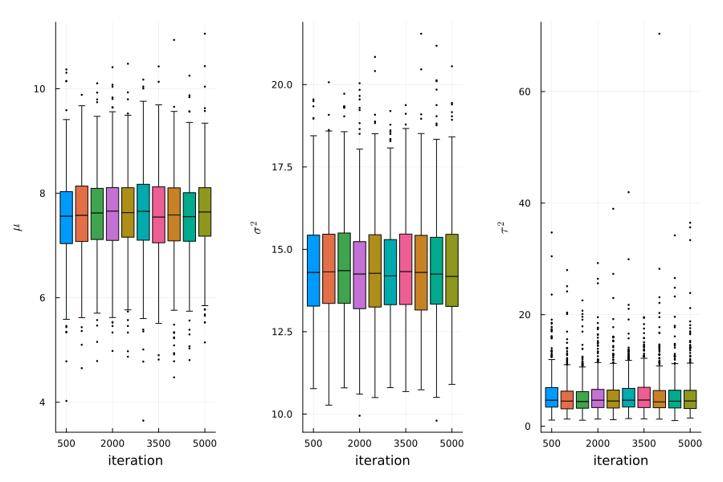
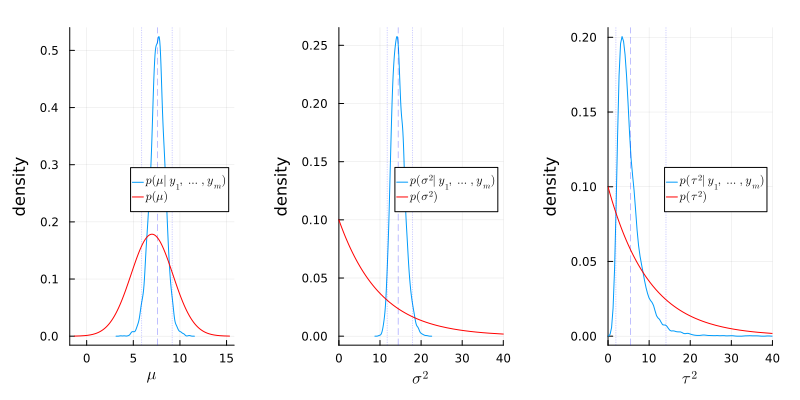
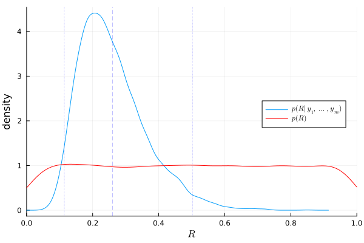
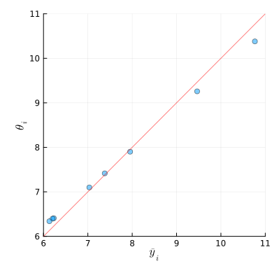

Exercise 8.3 Solution Example - Hoff, A First Course in Bayesian Statistical Methods
標準ベイズ統計学 演習問題 8.3 解答例
a)
Answer
using Distributions
using Random
using LaTeXStrings
using Plots, StatsPlots
using Plots.Measures
using CSV, DataFrames
using DelimitedFiles
using StatsBase
using SpecialFunctions
Random.seed!(1234)
# %%
# read data
Y = Matrix{Float64}(undef, 0, 2)
for i in 1:8
school = readdlm("../../Exercises/school$i.dat")
Y = vcat(Y, hcat(repeat([i], size(school, 1)), school))
end
# %%
# set prior parameters
μ₀ = 7
γ₀² = 5
τ₀² = 10
η₀ = 2
σ₀² = 10
ν₀ = 2
# %%
# starting values
m = length(unique(Y[:,1]))
n = Vector{Float64}(undef, m)
ȳ = Vector{Float64}(undef, m)
sv = Vector{Float64}(undef, m)
for j in 1:m
ȳ[j] = mean(Y[Y[:,1] .== j, 2])
sv[j] = var(Y[Y[:,1] .== j, 2])
n[j] = length(Y[Y[:,1] .== j, 2])
end
θ = copy(ȳ)
σ² = mean(sv)
μ = mean(θ)
τ² = var(θ)
# setup MCMC
Random.seed!(1)
S = 5000
THETA = Matrix{Float64}(undef, S, m)
MST = Matrix{Float64}(undef, S, 3)
# MCMC algorithm
for s in 1:S
# sample new values of the θs
for j in 1:m
v_θ = 1 / (n[j] / σ² + 1 / τ²)
E_θ = v_θ * (n[j]*ȳ[j]/σ² + μ/τ²)
θ[j] = rand(Normal(E_θ, sqrt(v_θ)))
end
# sample new value of σ²
νₙ = ν₀ + sum(n)
ss = ν₀ * σ₀²
for j in 1:m
ss += sum((Y[Y[:,1] .== j, 2] .- θ[j]).^2)
end
σ² = 1 / rand(Gamma(νₙ / 2, 2/ss))
# sample a new value of μ
v_μ = 1 / (m/τ² + 1/γ₀²)
E_μ = v_μ * (m * mean(θ) / τ² + μ₀ / γ₀²)
μ = rand(Normal(E_μ, sqrt(v_μ)))
# sample a new value of τ²
etam = η₀ + m
ss = η₀ * τ₀² + sum((θ .- μ).^2)
τ² = 1 / rand(Gamma(etam/2, 2/ss))
# store results
THETA[s, :] = θ
MST[s, :] = [μ, σ², τ²]
end

Figure 1: stationarity plot
using MCMCDiagnosticTools
using MCMCChains
ess(MCMCChains.Chains(MST))
ESS
parameters ess ess_per_sec
Symbol Float64 Missing
param_1 4046.5607 missing
param_2 4697.5784 missing
param_3 3299.9524 missing
b)
Answer
# posterior mean and 95% confidence region for σ²
julia> mean(MST[:,2])
14.413317696499103
julia> quantile(MST[:,2], [0.025, 0.975])
2-element Vector{Float64}:
11.733606090321313
17.92710379952854
# posterior mean and 95% confidence region for μ
julia> mean(MST[:,1])
7.587311747784735
julia> quantile(MST[:,1], [0.025, 0.975])
2-element Vector{Float64}:
5.910059688648781
9.160791496009686
julia> mean(MST[:,3])
5.478604048700004
julia> quantile(MST[:,3], [0.025, 0.975])
2-element Vector{Float64}:
1.9240022529423977
14.101516261365546

Figure 2: Comparison of posterior and prior densities
The following things were learned from the data:
- \(\sigma^2\) is around 14.4, which is higher than the prior mean 10.0, and the variance is smaller than the prior variance 100.
- \(\mu\) is around 7.6, which is higher than the prior mean 7.0, and the variance is smaller than the prior variance 10.0.
- \(\tau^2\) is around 5.5, which is smaller than the prior mean 10.0, and the variance is smaller than the prior variance 100.
c)
Answer
σ²_pri = rand(Gamma(ν₀/2, 2σ₀²/ν₀), S)
τ²_pri = rand(Gamma(η₀/2, 2τ₀²/η₀), S)
R_pri = τ²_pri ./ (σ²_pri .+ τ²_pri)
R_pos = MST[:,3] ./(MST[:,2] .+ MST[:,3])

Figure 3: Prior and posterior densities of \(R\)
The plot above shows that about 25% of the variance is due to between-school variation, and the rest is due to within-school variation.
d)
Answer
# posterior probability that θ₇ is smaller than θ₆
mean(THETA[:,7] .< THETA[:,6])
0.5222
# posterior probability that θ₇ is the smallest of all the θ’s
mean(THETA[:,7] .≤ minimum(THETA, dims=2))
0.325
e)
Answer
θ̄ = mean(THETA, dims=1) |> vec
fig_e = plot(
ȳ, θ̄, seriestype=:scatter, xlabel=L"\bar{y}_i", ylabel=L"\theta_i", legend=:none,
xlims=(6,11), ylims=(6,11), size=(400, 400), margin=5mm, alpha=0.5
)
fig_e = plot!(fig_e, x->x, color=:red, linewidth=1,alpha=0.5)
fig_e

Figure 4: Sample averages and posterior expectations
For the schools with large sample averages, the posterior expectations tend to be smaller than the sample averages. For the schools with small sample averages, the posterior expectations tend to be larger than the sample averages.
# sample mean of all observations
mean(Y[:,2])
7.6912777777777785
# posterior mean of μ
mean(MST[:,1])
7.587311747784735